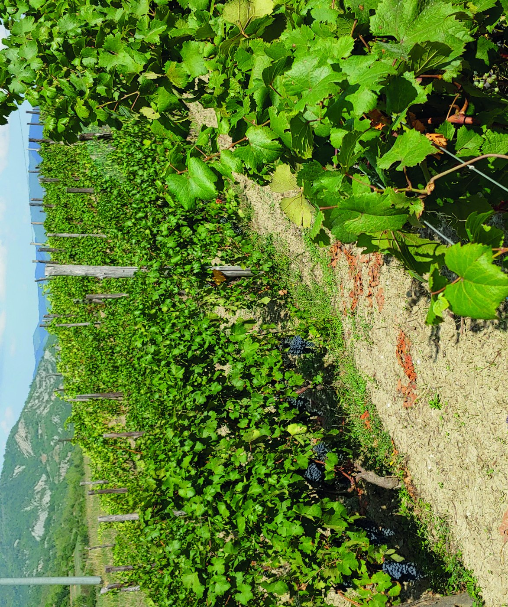
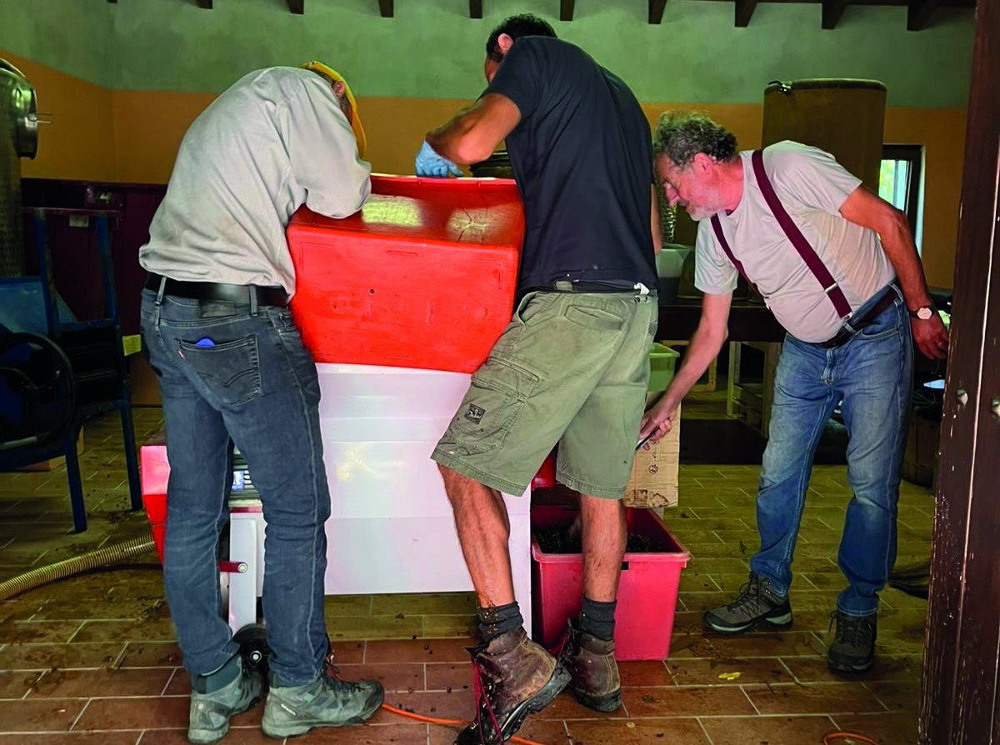
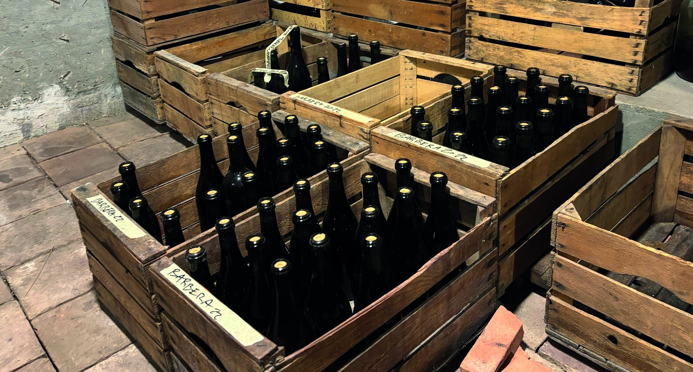

01
Manifattura manuale
Il lavoro resta fisico, quotidiano, diretto: dalla vigna alla cantina, ogni passaggio mantiene una scala umana.
Azienda Agricola Corrado Volpini
Una cantina di alta collina, essenziale e radicale, dove il vino nasce da una strada, da una valle e da una scelta manuale.
Identità
StraCrösa nasce dal dialetto locale: è il nome con cui gli abitanti hanno sempre chiamato la strada che conduce al borgo storico di Casanova Staffora. Non è solo una via fisica, ma il legame tra valle, borgo, vigneti e cantina.
Alta collina
Tra 550 e 650 metri, i vigneti cercano freschezza, aromi e tensione. Il territorio non viene usato come sfondo: diventa la misura stessa del vino.
Leggi il percorsoValori
Il lavoro resta fisico, quotidiano, diretto: dalla vigna alla cantina, ogni passaggio mantiene una scala umana.
Il vino non costruisce un racconto artificiale: restituisce un luogo preciso, con la sua strada e la sua altitudine.
Niente diserbo chimico, fermentazioni spontanee, assenza di filtrazioni: una scelta produttiva radicale e consapevole.



Il vino è il punto di arrivo di un percorso.
StraCrösa